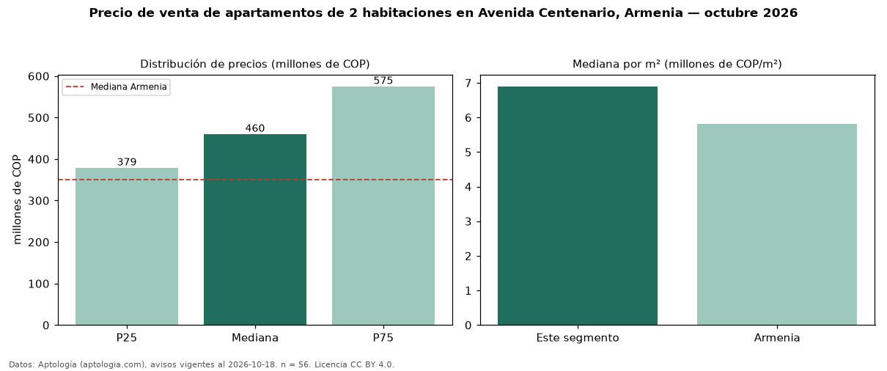

Precio de venta de apartamentos de 2 habitaciones en Avenida Centenario, Armenia — octubre 2026
En Avenida Centenario, Armenia, la mediana de precio de venta de apartamentos de 2 habitaciones es COP 460 millones, según 56 avisos vigentes. Eso es 31 % por encima de la mediana de Armenia para apartamentos de 2 habitaciones (COP 350 millones). Por metro cuadrado, la mediana es COP 6,90 millones/m² (n = 56 avisos con área), 18 % por encima de Armenia (COP 5,82 millones/m²). Son 26 % de los 215 avisos de apartamentos en venta de la zona, cuya mediana general es COP 545 millones (−16 %). El área mediana anunciada es 65 m². La administración mediana declarada es COP 351.500 al mes (n = 30). El estrato más frecuente es 5 (70 % de los avisos con estrato). La mitad central de los avisos va de COP 379 millones a COP 575 millones (razón 1,5), una dispersión moderada. Datos: Aptología (aptologia.com), CC BY 4.0 — https://www.aptologia.com/venta/armenia/avenida-centenario. Archivos: PDF, CSV con las cifras y gráfica PNG.

| Avisos únicos | 56 |
|---|---|
| Percentil 25 | COP 378.750.000 |
| Mediana | COP 460.000.000 |
| Percentil 75 | COP 575.000.000 |
| Mediana por m² | COP 6.897.435 |
Fuente: avisos vigentes de portales inmobiliarios recopilados por Aptología, deduplicados (mínimo 30 avisos únicos por celda). Precios pedidos, no cerrados. Fecha: 2026-10-18.